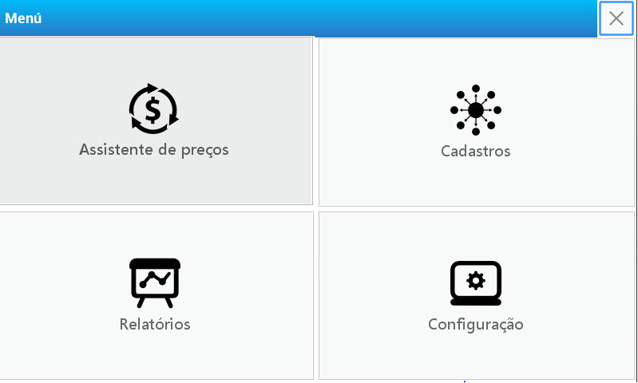
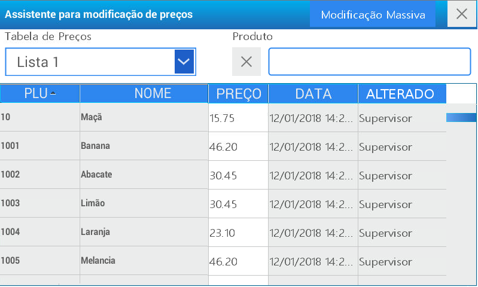
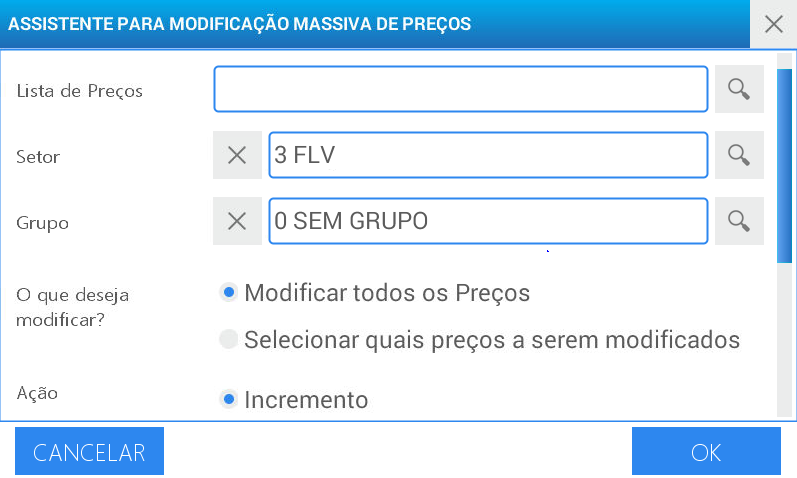
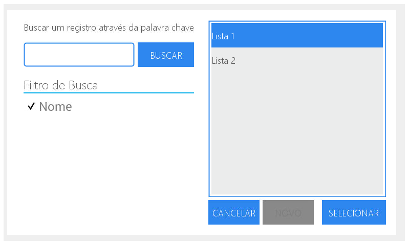
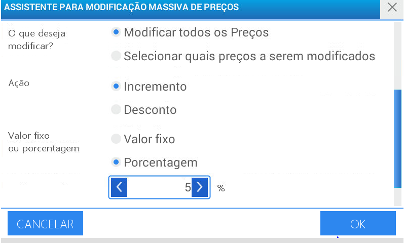
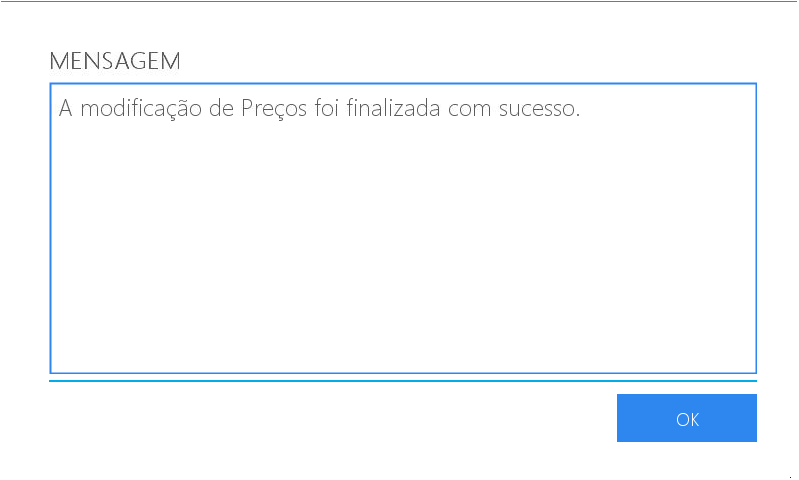

Assistente para modificação de preços
Permite modificar uma lista de preços, efetuar um aumento por porcentagem ou por valor, assim como conceder um desconto de maneira geral ou particular.

À título de exemplo, realizaremos um desconto de 5% a todos os produtos que se encontram na lista de preços denominada Lista 1
Acesse o menu pressionando a tecla
Selecione o usuário e digite a senha correspondente. Em seguida pressione
Escolha a opção Assistente de preços localizada na parte superior esquerda da tela
Selecione a opção de busca no primeiro campo denominado Lista de preços

Selecione Modificação Massiva

Clique sobre a Lista 1 e pressione selecionar

Também é possível efetuar a busca por palavra chave.
Caso desejado, utilize as opções de Setor e Grupo para facilitar a busca. Em ambos os campos a busca se dá da mesma maneira descrita nos passos anteriores.para apagar a seleção do registro selecionado pressione (X) Para utilizar estes filtros é necessário configurar-los previamente. Para isso consulte: Programação: Cadastros - Pasta Setores e Grupos.
No campo O que deseja modificar? escolha Modificar todos os preços
Pressione Desconto
A seguir pressione Porcentagem no campo o valor fixo ou Porcentagem
No campo de %, digite 5 através do teclado numérico

Pressione aceitar
Na tela será visualizado uma mensagem de confirmação da operação realizada.
